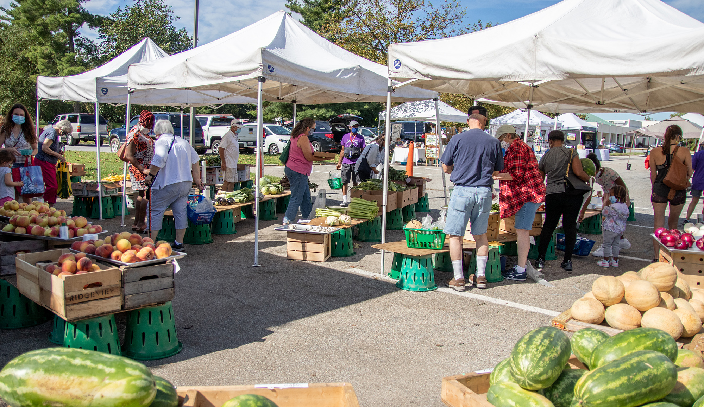

Prince George's County Farmer's Markets -- Intro

This webpage allows the user to see the breakdown of goods sold by all of the PG county farmer's markets
What exactly does it display?
It displays a bar chart that depicts how many farmer's markets sell good like eggs, seafood, crafts, and cheese.
Okay, now how do I use the webpage?
Simply click the button below!